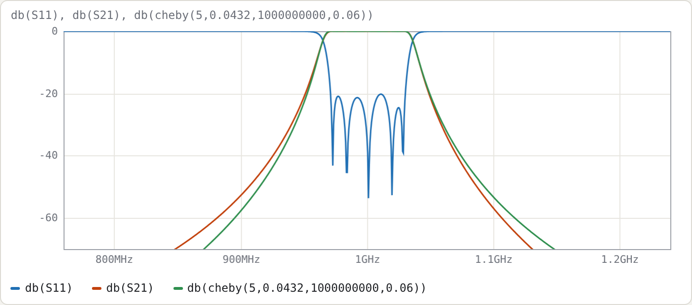
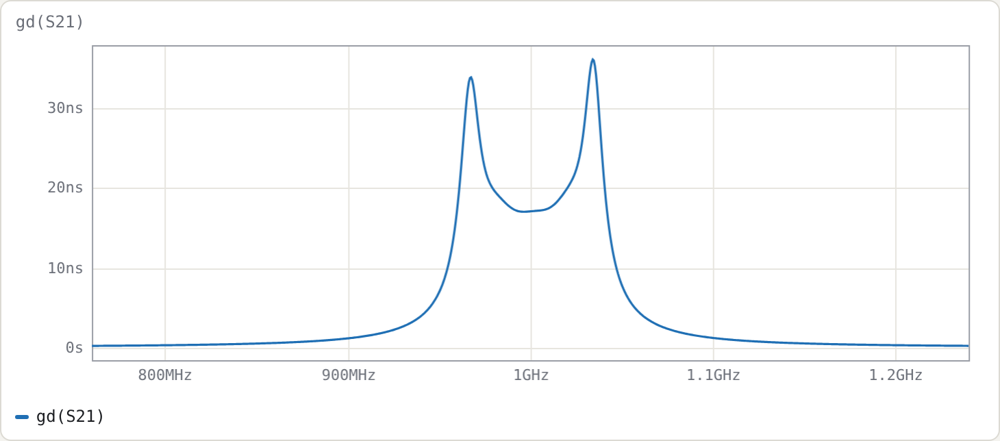
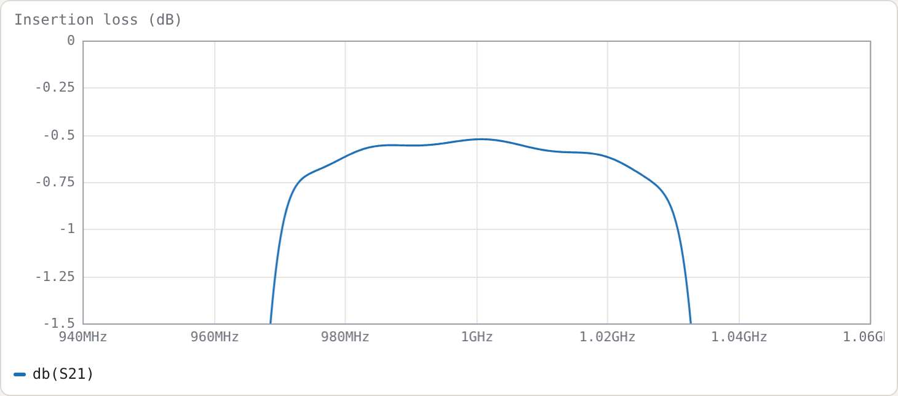
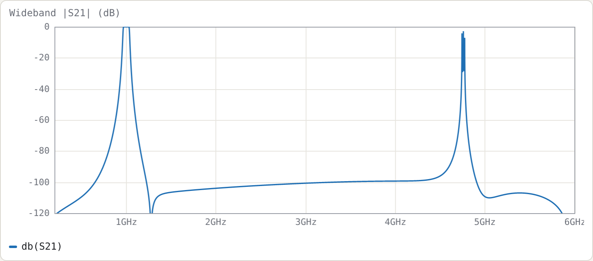

Example 3: Comb-line filter, from specification to loss budget
Netlist (final): examples/combline-synth-5pole.cir
Specification
| response | Chebyshev, 0.0432 dB ripple (20 dB return loss) |
| order | n = 5 |
| centre | 1.000 GHz |
| ripple bandwidth | 6 % (FBW = 0.06) |
| construction | air-dielectric comb-line (εr = 1), resonators 40° long at f0, loaded by capacitors |
| line impedance | Zr = 70 Ω (each resonator with its neighbours grounded) |
| ports | 50 Ω, tapped onto the end resonators |
The plan has five steps:
- Do the closed-form design by hand, to see where every number comes from.
- Let Synthesise… refine it.
- Polish it with the optimiser.
- Estimate insertion loss for realistic Q.
- Look at the wideband response.
Step 1: closed form by hand
Prototype. From the Chebyshev formulas (Matthaei §4.05), for 0.0432 dB, n = 5:
g0..g6 = 1, 0.97136, 1.37207, 1.80132, 1.37207, 0.97136, 1
Couplings and external Q:
k12 = k45 = 0.06/√(0.97136·1.37207) = 0.051972
k23 = k34 = 0.06/√(1.37207·1.80132) = 0.038165
Qe = 0.97136/0.06 = 16.189
Resonator. Yₐ = 1/70 = 14.286 mS and θ0 = 40° (0.69813 rad), so cot θ0 = 1.19175 and θ0 csc²θ0 = 1.68967.
slope b = (Yₐ/2)(cot θ0 + θ0 csc² θ0) = 7.1429 mS · 2.88142 = 20.582 mS
load Cl = Yₐ cot θ0 / ω0 = 2.7096 pF
Mutual admittances, from J = Yₘ cot θ0 = k·b:
Ym12 = 0.051972 · 20.582 / 1.19175 = 0.89757 mS
Ym23 = 0.038165 · 20.582 / 1.19175 = 0.65911 mS
Normalised capacitances, with η = 376.73 Ω:
Cg1 = (Yₐ − Ym12)·η = 5.0437 Cm12 = Ym12·η = 0.33814
Cg2 = (Yₐ − Ym12 − Ym23)·η = 4.7954 Cm23 = Ym23·η = 0.24831
Cg3 = (Yₐ − 2·Ym23)·η = 4.8852
Tap position:
sin θt = sin 40° · √(b·50/Qe) = 0.64279 · √(1.02908/16.189) = 0.16206 → θt = 9.327°
These are exactly the values the tool produces with Refine unticked. Untick it, generate, and compare with the comment header and .param lines.
The closed-form design, measured on a 2001-point sweep:
| target | closed form | |
|---|---|---|
| centre (geometric mean of −3 dB points) | 1.0000 GHz | 0.99805 GHz |
| −3 dB bandwidth | 7.108 % | 7.135 % |
| worst return loss, central 80 % of ripple band | 20.04 dB | 12.44 dB |
The skirts and centre are already close. The return loss is not, mainly because the closed-form tap formula assumes a single isolated line.
Step 2: refine
Run Synthesise… with the specification above, with Refine ticked and Polish unticked.

The refinement does three things:
- Couplings. It adjusts each Yₘ so the isolated pair's split-mode coupling equals k exactly. For this design the change is tiny: −0.07 % on Ym12 and −0.04 % on Ym23. The split-mode and J/b definitions agree closely at 6 % bandwidth.
- Tap. It moves the tap to 9.46° and sets the end capacitors to 2.736 pF. With these, the tap-loaded first resonator has Qe = 16.24 (the target at the design bandwidth) and resonates exactly at the design centre.
- Centre and bandwidth. It pre-distorts the design to f0 = 1.002106 GHz and FBW = 5.982 %, so the realised centre and −3 dB bandwidth land on target.
| target | refined | |
|---|---|---|
| centre | 1.0000 GHz | 1.00001 GHz |
| −3 dB bandwidth | 7.108 % | 7.108 % |
| worst return loss | 20.04 dB | 18.35 dB |
Step 3: polish
Press Optimise, or tick Polish in the dialog. The netlist already contains everything the optimiser needs:
- Tune ranges: on
tt,cg1..cg3,cm12,cm23,cl1andcl. - A return-loss goal over the ripple band.
- Two skirt goals, which pin the rejection at the ideal −20 dB points so the band can't simply widen.
It converges in 88 evaluations:
| target | polished | |
|---|---|---|
| centre | 1.0000 GHz | 1.00011 GHz |
| −3 dB bandwidth | 7.108 % | 7.107 % |
| worst return loss | 20.04 dB | 20.21 dB |
These are the final values in the example file:
.param th0 = 39.9159442 # resonator length at 1 GHz (8.020 mm + 25.221 mm = 33.24 mm)
.param tt = 9.6302 # tap, degrees from the short
.param cg1 = 5.0444 .param cg2 = 4.8033 .param cg3 = 4.8891
.param cm12 = 0.34298 .param cm23 = 0.24749
.param cl1 = 2.7417p .param cl = 2.7071p

The green trace is the ideal prototype cheby(5,0.0432,1G,0.06). Both skirts sit slightly outside it. Comb-line coupling varies as cot θ, so the band edges are not arithmetically symmetric; the optimiser holds the −20 dB points, not the whole skirt shape.

The peak passband group delay is 36 ns, at the band edges.
Step 4: insertion loss for realistic Q
Add Q 2000 inside both cline blocks to model conductor loss. To model lossy tuning capacitors, add Q=1000 to the capacitor lines (C1 r1 0 cl1 Q=1000, …). Measured at f0:
| line Q | capacitor Q | IL at f0 |
|---|---|---|
| ∞ | ∞ | 0.002 dB |
| 5000 | ∞ | 0.056 dB |
| 2000 | ∞ | 0.138 dB |
| 2000 | 1000 | 0.524 dB |

Checking it
The usual estimate of midband dissipation loss is
ΔIL ≈ 4.343 · Σgᵢ / (FBW · Qu) Σg1..g5 = 6.4882
Simply putting Qu = 2000 gives 0.235 dB, which overestimates the simulated loss. The resonator Q is not the line Q, because part of the stored energy sits in the (lossless) capacitor. The energy fractions follow from the two terms of the slope parameter:
line fraction p_line = θ0 csc²θ0 / (cot θ0 + θ0 csc²θ0) = 1.68967/2.88142 = 0.5864
cap fraction p_cap = cot θ0 / (cot θ0 + θ0 csc²θ0) = 0.4136
1/Qu = p_line/Q_line + 2·p_cap/Q_cap
The factor 2 on the capacitor term arises because a capacitor's Q counts only its electric energy. With this:
| line Q | cap Q | Qu | predicted ΔIL | simulated |
|---|---|---|---|---|
| 5000 | ∞ | 8527 | 0.055 dB | 0.056 dB |
| 2000 | ∞ | 3411 | 0.138 dB | 0.138 dB |
| 2000 | 1000 | 892 | 0.526 dB | 0.524 dB |
There is a practical point here: a short, heavily loaded comb-line resonator is only as good as its tuning capacitor.
Step 5: wideband response and the spurious passband
Set .freq 0.2G 6G 12001.

Stopband. The rejection is at least 92 dB from 1.2 to 4 GHz in the lossless model. The deep notch just above the passband is at 1.278 GHz.
Spurious passband. The first spurious passband is at about 4.75 GHz, where the resonators next satisfy ωCl = Yₐ cot θ. With θ = 40°·x and f = x·f0, the root of x·cot 40° = cot(40x°) is x ≈ 4.75.
This is the main attraction of comb-line with short resonators. A 90° interdigital resonator has its first spurious passband at 3f0 (the 3 GHz design in Example 4 has it at 9.0 GHz). The shorter θ0 and heavier loading push the spurious passband further out, at the cost of a lower resonator Q (Step 4).
Try
- Re-synthesise with θ0 = 60° and compare the Step-4 Qu and the Step-5 spurious frequency.
- Change Zr to 50 Ω. The C/ε values scale, the couplings don't (Yₘ/Yₐ is independent of Zr), and the tap moves.
- Push the bandwidth to 20 %, then compare refined and polished results. The refinement still lands centre and bandwidth; the polish matters more.